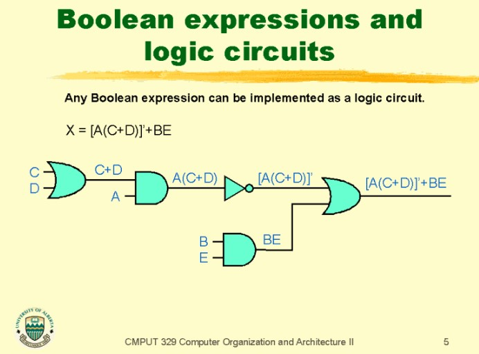
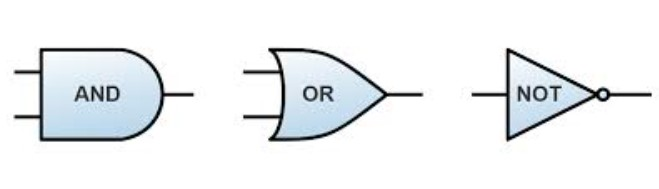

Boolean expressions and values led to the understanding of two binary states (1 or 0, true or false) in computers. This new branch of mathematics opened a large field of possibilities so others could later create programming languages and namely, computer circuits.
Computer Circuits/Gates:
Boolean Algebra analyzed and was able to simplify digital circuits. For example, logic gatesuse Boolean Logic (a.k.a. Boolean Algebra) by controlling the circulation of electricity in a device. In addition, they use Boolean Operators and algebraic expressions to define instructions.


Boolean Operators in Logic Gates
Boolean Logic
The creation of symbolic notation was extremely benificial to clearly convey operations in a way computers could understand. This led to the creation of programming languages, which are filled with symbols that help the computer follow instructions.